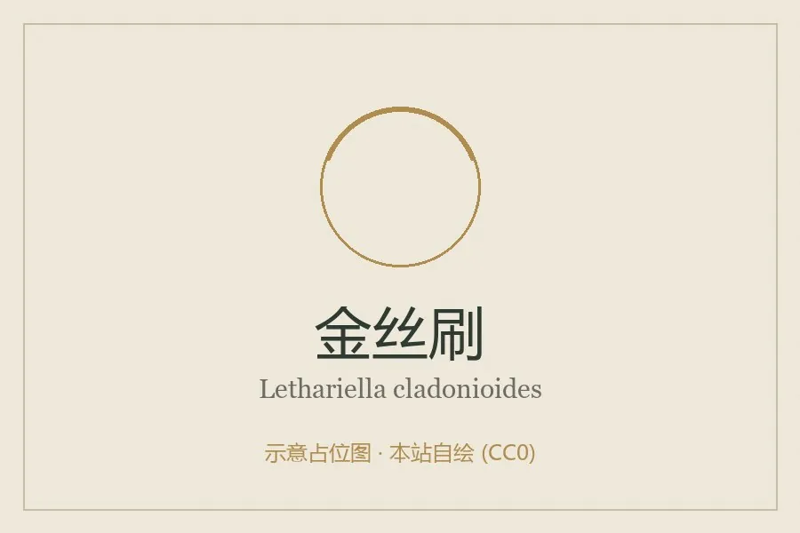

真菌 · 真菌界
金丝刷 Lethariella cladonioides

梅衣科枝状地衣，地衣体橙黄至金黄色、多次分枝如毛刷，生于高山灌丛，可制茶入药，味苦而性凉。
- 分类
- 门子囊菌门纲茶渍纲目茶渍目科梅衣科属金丝刷属
- 栖息环境
- 高山灌丛、岩壁与树干，海拔 3000–4500 米
- 地理分布
- 青藏高原与横断山区，中国云南、四川、西藏及喜马拉雅地区
- 保护级别
- 暂无评估；生长缓慢，药用采集压力需关注
物种志
金丝刷的地衣体呈灌木状或毛刷状，高 3–10 厘米，橙黄、金黄至橙红色，由基部多次分枝，分枝细圆柱形，表面平滑或有细纵纹，干燥时脆硬，湿润时略柔韧。子囊盘少见，盘面橙褐色。地衣体由真菌与藻类共生构成。
金丝刷生于高山灌丛、岩壁与树干上，是青藏高原与横断山区常见的高海拔地衣，海拔多在 3000–4500 米。它含金丝刷酸等成分，味苦、性凉，藏族民间采集后晒干泡茶或入药，用于清热解毒、消炎止痛；现代研究提示其提取物具有抗炎、抗氧化活性。它生长缓慢，过度采集会破坏高山地衣群落，采集应限量并避开保护区核心区。采集多在夏秋，晒干后保存。
形态与习性
- 地衣体灌木状，高 3–10 厘米，橙黄至金黄色
- 分枝多次分枝如毛刷，细圆柱形
- 生境高山灌丛、岩壁与树干，3000–4500 米
- 食用性晒干泡茶，味苦性凉，民间称金丝茶
- 药用清热解毒、消炎止痛，不宜过量
- 保护生长缓慢，采集应限量
趣味知识
- 金丝刷的颜色像一束金黄色的细铁丝，因此得名“金丝刷”。
- 藏区民间把它晒干泡茶，茶汤金黄，味苦回甘，用于清热消炎。
- 它生长在海拔三四千米的高山灌丛，每年只增长几毫米。
- 现代研究发现其提取物有抗炎、抗氧化活性，但不能替代正规药物。